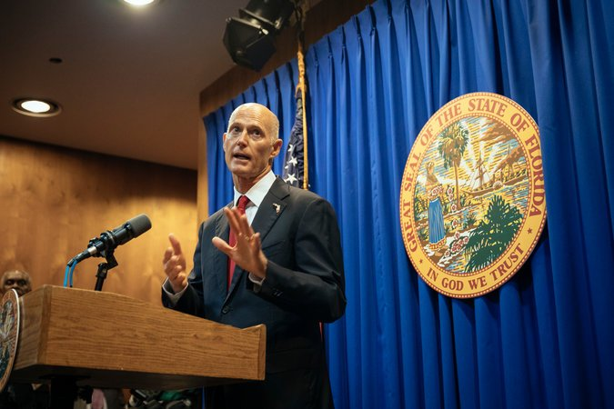

It is not just in Florida where the mass shooting at a high school is prompting lawmakers to take up gun control legislation. The same thing is happening across the country, from Washington to Vermont.
What was one of the deadliest school shootings in modern American history prompted Gov. Gina Raimondo of Rhode Island to sign an executive order on Monday to establish a policy to take guns away from people who pose a danger to themselves or others.
Many of these measures to address gun violence come as students around the nation, accustomed to inaction in Congress, have begun protesting. The most vocal have been the survivors of the shooting, which left 17 dead in Florida on Feb. 14.
Still, not all states are moving to toughen gun laws. Some states are considering action to loosen regulations. Here is a roundup of what states are considering doing or have already done.
Governor Raimondo’s move by executive order was the first of its kind. Five other states — Connecticut, California, Washington, Oregon and Indiana — have passed similar “extreme risk” laws, sometimes known as “red flag” laws, having done so either in the legislature or by voter referendum. Since the Florida shooting, a dozen others are considering similar measures.
Rhode Island has also joined with Connecticut, Massachusetts, New Jersey and New York in a coalition to combat gun violence. The group plans to create a multistate database to trace and intercept guns used in crimes or transported across state lines.
Lawmakers have proposed a package of gun measures that defy the powerful National Rifle Association, but fall well short of the more restrictive measures, like an assault weapons ban, favored by the shooting’s survivors.
Gov. Rick Scott, a Republican, proposed raising the minimum age to buy assault rifles to 21 and called for a raft of measures he said could keep mentally ill or violent people from purchasing weapons and keep schools safer. Republicans in the House and Senate, who appear supportive of Mr. Scott’s proposals, also called for a three-day waiting period on the purchase of those weapons, which already exists for those who wish to buy handguns.
Mr. Scott proposed $450 million in new funding for school security and $50 million in mental health funding and called for a law enforcement officer to be posted in every public school.
Gov. Phil Scott, a Republican, has done an about-face in his rural state, where hunting is a major pastime and which has some of the most lax gun laws in the country. Even after the shooting, he told the Vermont publication Seven Days that he saw no need for changing laws. “I believe our gun laws are balanced,” said Mr. Scott, who has a 93 percent rating from the N.R.A.
But shortly after, a student at a Vermont high school was accused of planning a mass shooting. Mr. Scott said he was “jolted” by the prospect of such a disaster so close to home.
“The reality of how close we came to a devastating tragedy underscores the threat of violence that faces the entire country,” he said. “As a result, I’ve been asking myself, ‘Are we doing everything we can to protect our kids?’”
Now, he said, “Everything should be on the table at this point.”
The State Senate is expected to pass two measures this week to tighten gun controls. The Senate Judiciary Committee last week unanimously passed one bill — to allow law enforcement to remove guns from people considered at extreme risk of harming themselves or others.
The committee was divided on the second, more controversial bill — an expansion of background checks — but in an unusual step, appeared ready to allow it to move to the Senate floor without a committee vote. The State House is likely to take up the two measures later next month.
The day after the shooting, Oregon’s House passed a bill making it illegal for people convicted of domestic violence or those with restraining orders against them to possess weapons, even if they are not married to, do not live with, or do not have children with their victims.
One of the three Republicans who joined Democrats in voting for the bill said pressure from groups like the N.R.A. made him want to “crawl under my desk in the fetal position,” according to The Oregonian. The State Senate passed the bill late last week; Gov. Kate Brown, a Democrat, is expected to sign it.
“It took the voices and outrage of youth devastated by gun violence to hold decision makers’ feet to the fire,” she said in a statement.
A bill filed in Washington State on Friday would raise the minimum age to purchase a semiautomatic rifle or shotgun with “tactical features” to 21, which the bill’s sponsors said would align rules to buy those guns with existing rules for handguns. It would also make the sale of those weapons subject to state and federal background checks.
The bill would also create a program to allow students to report threats or potentially violent activity anonymously to the attorney general’s office and would require the state to give grants to school districts for emergency response systems.
Lawmakers in Washington are also working on a ban on bump stocks, which accelerate the rate of fire on semiautomatic firearms. The legislation passed the Senate in January and the House on Friday, with a final Senate vote remaining.
Gov. John Kasich, a Republican, has appointed a committee to propose concrete actions and urged it to make its recommendations quickly.
Meanwhile, several bills, some restricting access to guns and some expanding it, are pending in the Statehouse.
Michael J. Madigan, the House speaker, said he would schedule votes this week on two gun-related bills that were filed before the shooting. One would require gun dealers to be licensed, much like car dealerships or beauty salons. The other, similar to the “extreme risk” laws in other states, allows a judge to bar a person from possessing weapons if family members or law enforcement officers ask the court to do so.
Mr. Madigan said lawmakers this week would also introduce legislation to raise the minimum age to purchase military-style assault rifles to 21.
Some bills loosening gun restrictions have advanced in the state since the Florida shooting, according to The Indianapolis Star. A Senate committee last week advanced a bill that would do away with a $125 fee for a lifetime license to carry a handgun, and would increase from four years to five years a permit that exempts holders from background checks when purchasing a handgun.
In the House, a committee passed a bill last week allowing people to carry weapons at churches that share property with schools, as long as they are working for or attending the church, and the church does not prohibit weapons. This month, before the shooting, the measure was passed by the full Senate.
The state is considering legislation to lower the age at which people can carry hidden, loaded guns in public to 18 from 21, while also requiring anyone under 21 to get a permit, including for carrying their weapons on college campuses. The State House passed the measure earlier this month. It is now before the State Senate.
The House has passed a measure that the N.R.A. calls “self-defense” legislation. It would let people carry guns on the grounds of schools or churches. The Senate is considering a bill to repeal the permitting process to allow law-abiding citizens to carry a weapon without having to get a concealed-carry permit.
After the shooting, Gov. Greg Abbott of Texas, a Republican, sent a letter to Mike Morath, the Texas Education Agency commissioner, ordering safety information to be distributed to all schools, and asking him to take steps to ensure that all schools have completed safety audits and that all have a multihazard emergency plan in place.